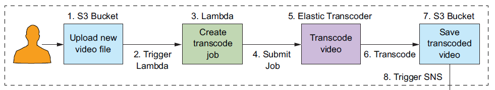
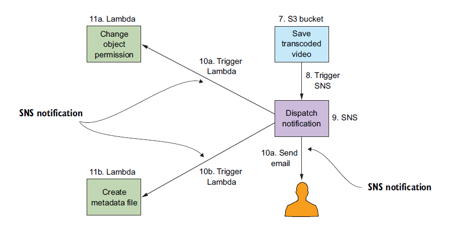
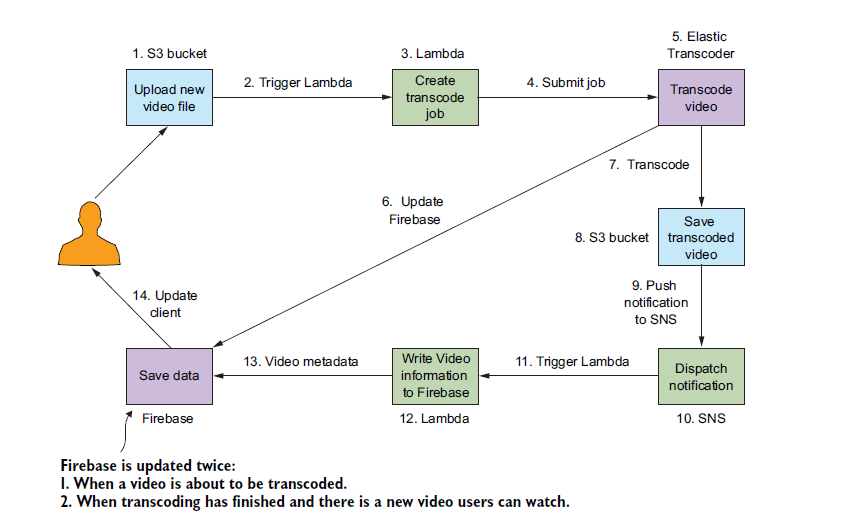
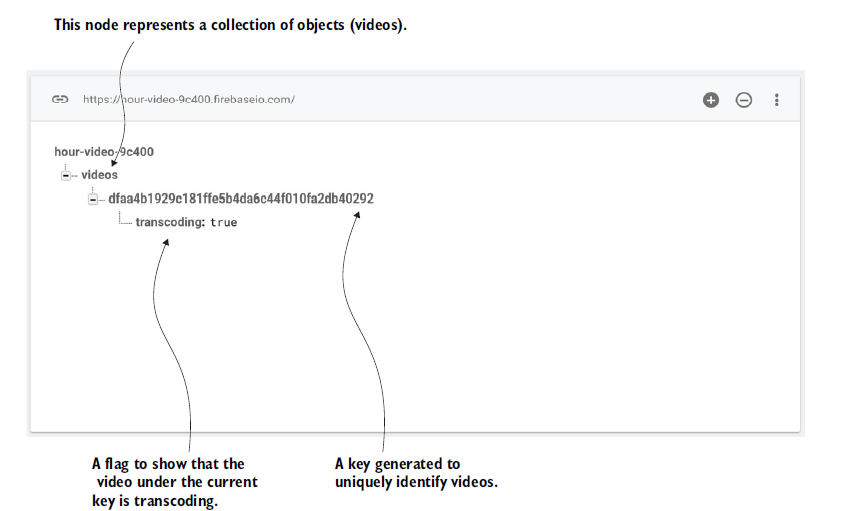

Video hosting website
This project utilizes the power of the serverless services out there in the wild.
So I came across this amazing book on Serverless Architectures on AWS With examples using AWS Lambda by Peter Sbarski which is a whole project in the form of a book that explains almost everything from the basics to building and fairly complex architecture to host the whole video hosting website.
Even if you have not come across the serverless services like AWS Lambda, API Gateway, S3 buckets, SNS (Simple Notification Service).
A must-read if you are a beginner and could not find a way where to start.
What is a lambda function?
“AWS Lambda is a compute service that executes code written in JavaScript (node.js), Python, C#, or Java on AWS infrastructure. Source code (JARs or DLLs in case of Java or C#) is zipped up and deployed to an isolated container that has an allocation of memory, disk space, and CPU.
The combination of code, configuration, and dependencies is typically referred to as a Lambda function . The Lambda runtime can invoke a function multiple times in parallel. Lambda supports push and pull event models of operation and integrates with a large number of AWS services.''
Boring isn't it
Let's explain it with an example
Most of this software requires servers running in data centers or in the cloud that needs to be managed, maintained, patched, and backed up. Provisioning, managing, and patching of servers is a time-consuming task that often requires dedicated operations people.
Imagine a world where you can skip all those.
Yes, it is possible through the Lambda function. It's a compute service from Amazon web services that can execute code in a massively parallelized way in response to the events. Lambda takes your code run it without any need to provision servers, install software, deploy containers, or worry about the low- level details.
Still don't doesn't make any sense, don't worry you will once you start building it by yourself.
You just have to start it without thinking too much.
So, let us begin with the first module.
Services used:
- AWS Lambda - to run your code
- Amazon S3 - to store your video files
- AWS transcoder - convert the videos in appropriate formats
- Simple Notification Service (SNS) - to trigger other services or send the notification through e-mail and text message.
Every Video hosting site has a video transcoder that converts the video to be able to watch on multiple devices.
S3 bucket is used for storing the uploaded videos and it will be integrated with Lambda to trigger the Elastic transcode whose sole purpose is to create the video in a different format like 360p, 720p, 1080p.

- User-uploaded data went to S3 object Storage.
- As soon as the video is uploaded it triggers the Lambda function as configured in the event section in the S3 properties.
- Lambda function now creates a transcode code job for Elastic transcoder by providing the pipeline ID, file location, and format type we need to have as an output
- The job will then be submitted to the Elastic Transcoder for processing
- The submitted job is then executed by the Elastic Transcoder and generate the 3-video format
- These newly created video formats were then saved in another S3 bucket.
- Now we have all the format (320p,720p,1080p) in new S3 bucket
- Just like we have event configured in the upload s3 bucket which triggers the lambda function for the transcoder job, this time we trigger the SNS service for notification.
- An SNS service was configured to send notification and to act as the event for the Lambda function.
- Once the SNS was triggered it does two things
- Change the object permission (so that it can be accessed within the application)
- Create the metadata of the generated format.
- Also, send the notification to the user with the metadata of the upload file.
- a. This lambda function will change Object (video file) permission generated by the Elastic transcoder
- b. This lambda function will create the metadata file within the same S3 bucket where the formatted files are created.

Second module:
Adding authentication to the website which allows user to login in and browses through the personalized content, by personalized I meant the user's uploaded content.
Services used:
- AWS Lambda
- API Gateway
- Auth0 for user authentication
- AWS IAM for user authorization
- Website (FE) using Bootstrap and jQuery.
The below Figure will explain how the Auth0 was integrated with the website to authenticate the user and then the JWT token returned from the Auth0 were used to authorize the user to access the back AWS services.
- Users click the login button on the website.
- The client application launches the Auth0 login screen.
- For now, the only social provider you can use free on Auth0 is Google-oauth2
- Authentication is performed through Auth0 and once it authenticates by the social provider Auth0 sends JSON Web Token which later then be exchanged to access backend services
- Once the user is authenticated client application requests the API Gateway
- API Gateway passes the received JWT token to the lambda function.
- Lambda function validates the JWT token and generates a response sends back to API Gateway and eventually reaches the client application.
Since we are transcoding the video in appropriate formats, the transcoder needs some time to build those formats
This module is for adding the buffer time, so that once the user upload video completes frontend show animation which denotes the uploaded video in under transcodeing phase this is done by maintaining an entry in the Google Firebase database which mark the video transcoding : True for video under this phase
The final architecture looks like this.
 As the video is sent to the transcoder, we will make an entry to the firebase database will make entry to its database by setting its transcoding value to true.  And the lambda function which gets the list of all transcoded videos from the S3 bucket is designed to pick only those videos whose transcoding value is false.
During the course through this book, you will create several lambda functions which will get minor updates now and then as you move through the different chapters.
- Extract-metadata - for extracting and storing the metadata of uploaded videos
- Get-video-list - to get the list of transcoded videos which is used by the frontend to display on the website
- Get-signed-URL - this is used to generate the private signed URL for all the videos
- Get-upload-policy - used by custom authorizer to allow only authenticated user to watch the videos
- Set-permission - set the permission to allow the video to be accessible publicly which you'll abandon once you create the get-signed-URL function
- Transcode-video - it creates the data for the transcoder job which then trigger the Elastic transcoder
- Transcode-video-firebase-update - firebase integration
- User- profile - Introduce the Auth0 authentication to the website, you might be stuck here because of the recent update in the auth0 links
There were other parts to the projects which I skipped so that I would not overwhelm you guys
For the beginners, I know for start, it seems too much to take on, but believe me, all the parts of the chapters were designed to build the smallest module first and building it pieces by pieces to the final big module.
All the integration parts where different functions and API gateways integrated were explained alongside to keep the rhythm.
If you are interested to explore the world of serverless you would love it.
PS: There were some bugs in the code provided by the author but its fixable and I suggest you should first google it, I found all of my answers through google or reading it to a rubber duck or by taking a walk, but if you feel lost you can contact me at pmrubenrao@gmail.com